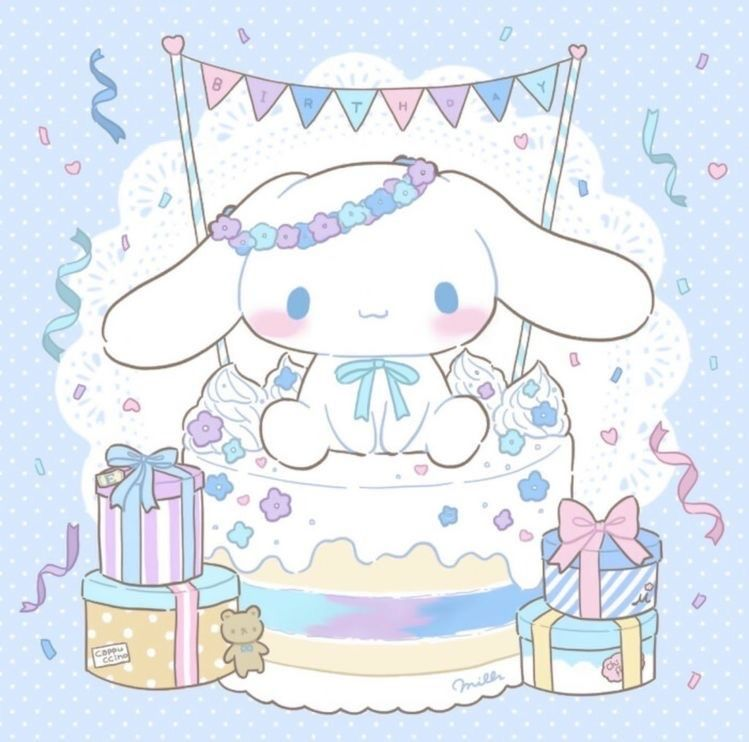
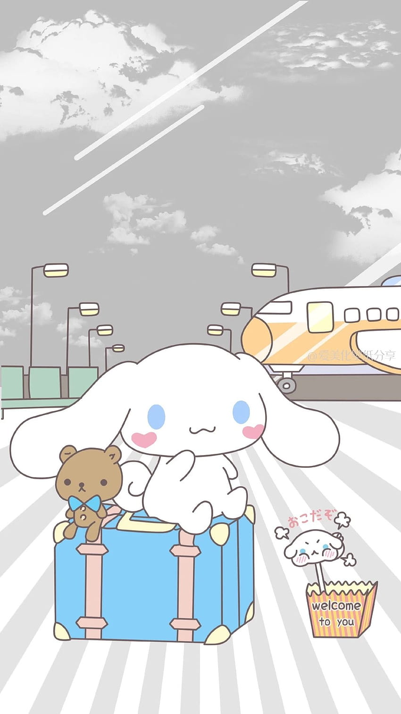
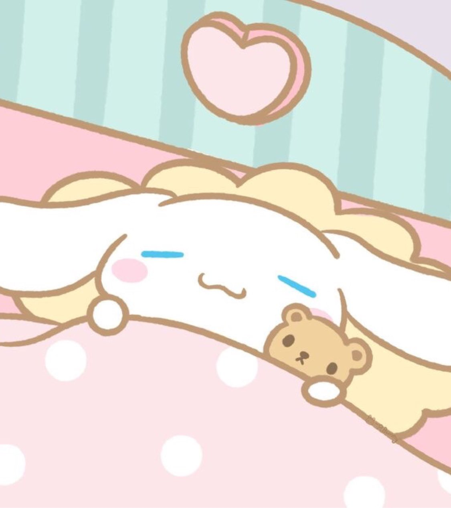

|  | Cinnamoroll, born on March 6th, is a small, chubby male dog, created by Miyuki Okumura in 2001. He has white fur, pink cheeks, and ears that allow him to fly. |
| Cinnamoroll has an older sister named Poron. His friends include Espresso, Mocha, and Cappuccino. He is 21.5 cm tall and his hobby is eating. |  |
|  | Cinnamoroll became popular quickly after his debut, with merchandise accounting for 25% by 2004. In the city of Shinagawa, Japan, Cinnamoroll was appointed as the offical tourism ambassador. He has also been featured in various media such as mangas, movies, and music. |